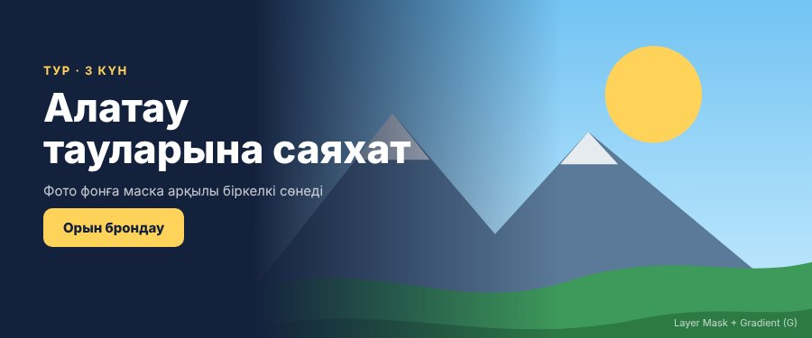

Мұғалім «Мұғалімге» батырмасын проекторда ашады, студенттер экрандағы QR-кодты сканерлейді. Әр бетте: квиз, деңгейлі тапсырмалар (A/B/C), өзін-өзі бағалау, өзара бағалау, рефлексия және журнал (CSV/ZIP).
ВЕБ 2-1 · Adobe Photoshop (РО 2.1)

МаскаларҚабат маскалары және қиып алу маскалары (Clipping Mask)